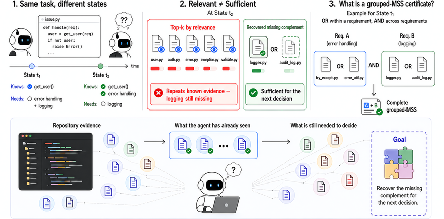
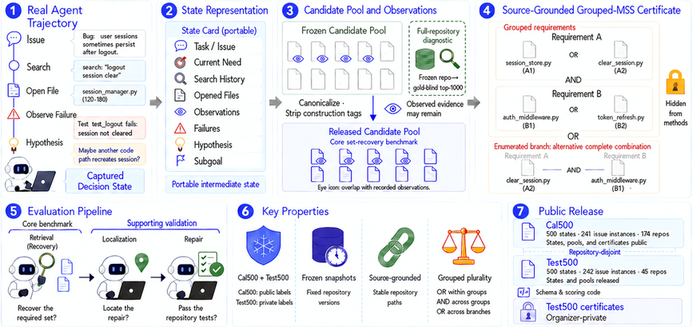
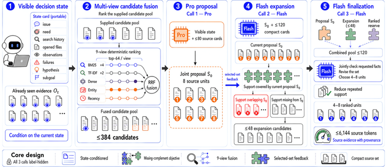

A coding agent halfway through an issue has already read whatever a retriever ranks highest, so ranking refills the budget with variants of one fact while the decision stays unsupported. MSS-Complement builds a set instead: three semantic calls propose a jointly sufficient set, hunt what it lacks, and return 4 to 8 intact units under 6,144 tokens, covering every required fact for 73.0% of held-out states at five items and 80.6% at eight.
Relevance is scored per passage but sufficiency belongs to the set. A ranker can spend its whole budget on paraphrases of one required fact and leave the pending decision unsupported, the failure this paper formalizes as state-conditioned minimal sufficient evidence recovery.
The benchmark records 500 held-out agent states from 45 repositories, what the agent has already seen, and credits only evidence sets that cover every fact the current decision was annotated to require.
Acquisition becomes set construction in three semantic calls: propose a jointly sufficient set, search specifically for what it lacks, finalize 4 to 8 intact source units. One configuration fixed on calibration data carries all reported results.
Three extracted equations carry the math: a per-fact coverage indicator, the branch-complete set score, and the Complete-MSS at k metric that averages completeness over states.



Abstract
A coding agent halfway through an issue has already read much of what a retriever ranks highest. Relevance is scored per passage, but sufficiency belongs to the set: a ranker can fill its budget with variants of one required fact and leave the decision unsupported. We formulate state-conditioned minimal sufficient evidence recovery: given a captured agent state, recover a compact evidence combination that supplies the support its next decision still lacks. SERBench measures this on 500 held-out states from 45 repositories, recording what the agent has seen and crediting only sets that cover every fact the current decision was annotated to require. MSS-Complement treats acquisition as set construction, not ranking. Three semantic calls propose a jointly sufficient set, search for what it lacks, and return 4-8 intact source units within 6,144 tokens. One configuration, fixed on calibration data, recovers a complete set for 73.0% of those states at five items and 80.6% at eight, against 61.4% and 72.4% for Qwen3 embedding with reranking. A matched control ranking by similarity alone reaches 66.6%, placing the gain in the set-level policy, not the computation. From frozen repository source with no gold-derived pool, the lead is 5.0 points. On AMA-Bench it answers from a 76.2% smaller answer prompt, with accuracy 2.08 points above that benchmark's own memory agent. Removing one required group from an otherwise complete set costs 12.3 and 11.1 points of repair-localization precision under two executors. Retrieval for agents is better posed as recovering what a decision lacks than re-ranking what an issue resembles.